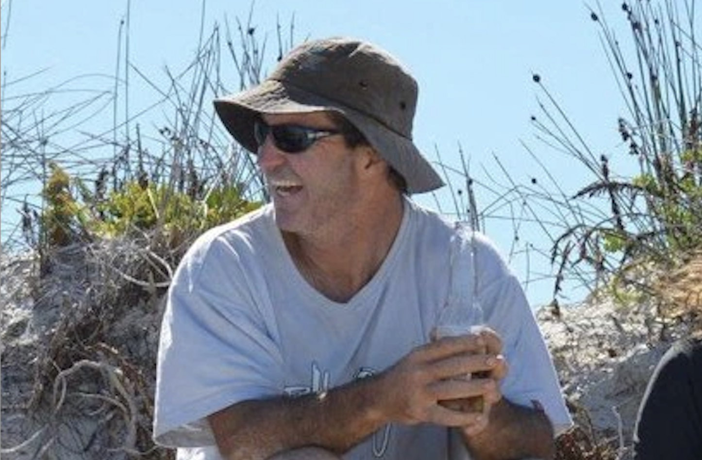
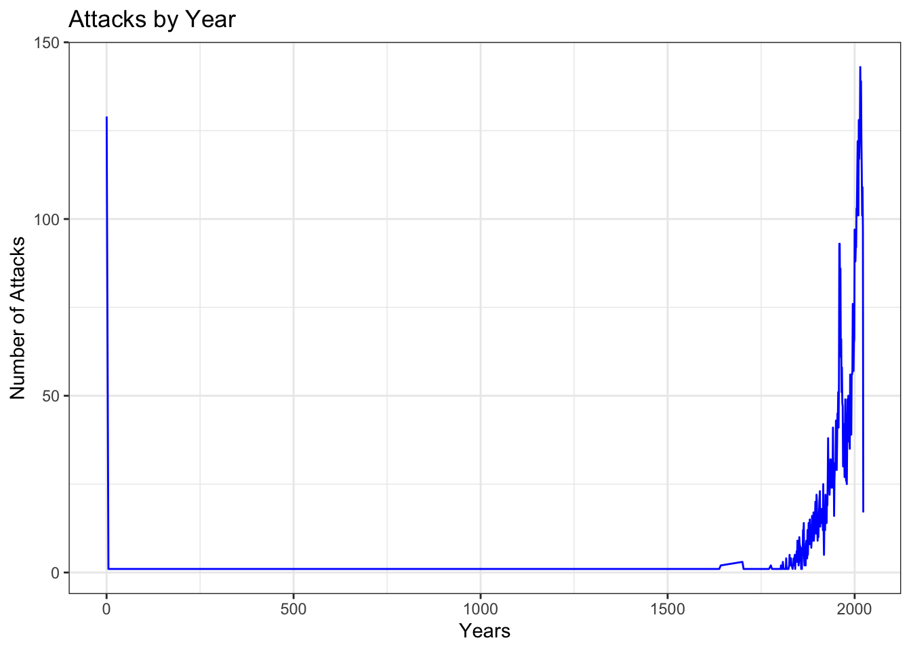
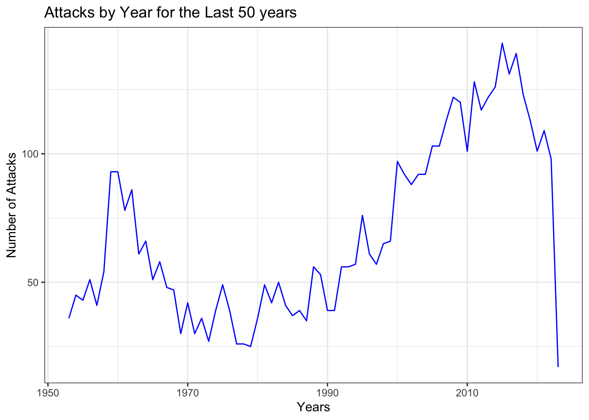
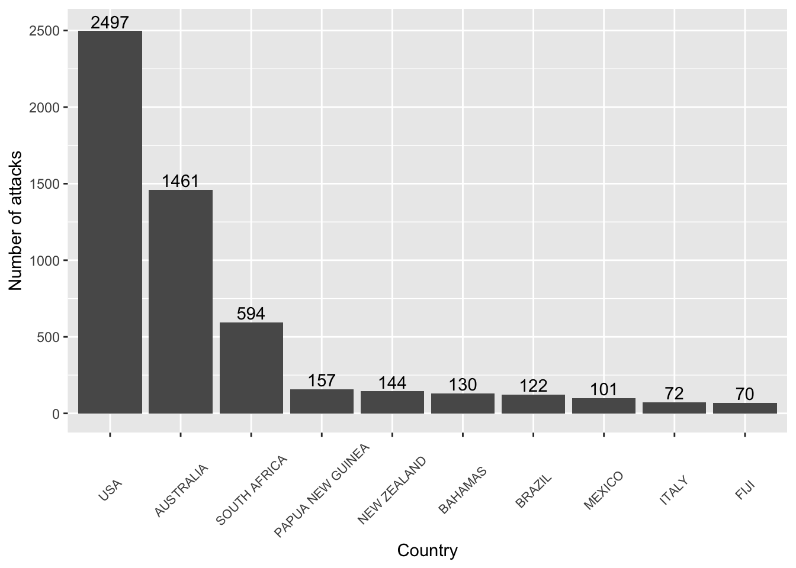
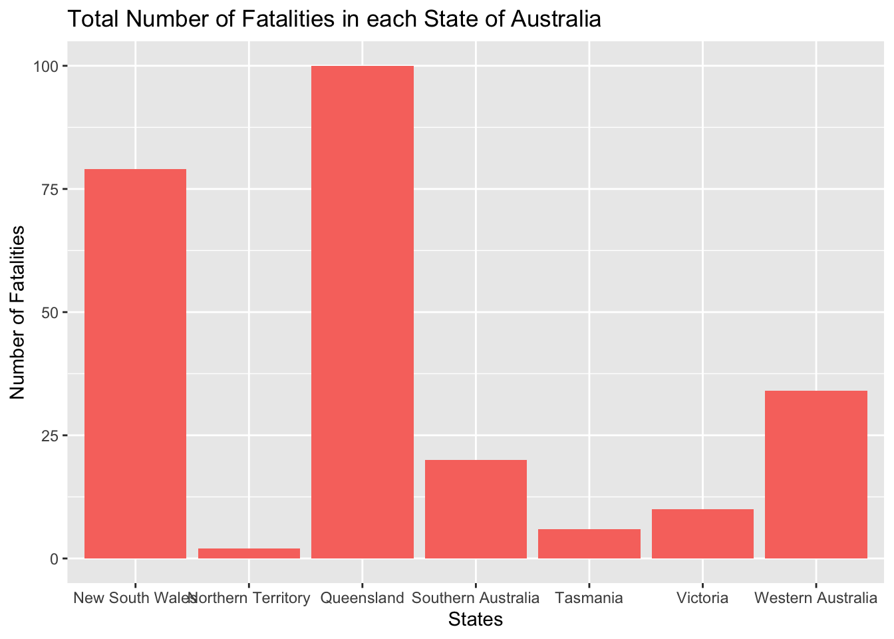

On the morning of October 9, 2020, Andrew Sharpe was surfing with seven of his friends in Wylie Bay, Western Australia near the town of Esperance. As Sharpe and the other surfers were awaiting their next wave, a massive predator was waiting below.
Sharpe was suddenly struck with massive force by a great white shark, which was reported to be around 15 feet in length, propelling itself from the ocean floor straight into Sharpe sending his body flying through the air. His friends quickly acted, and as Sharpe floated at the surface with obvious injury (he had also been bitten on the leg in the process of being initially struck), they tried desperately to swim to him and get him on a board and back to the beach to get help. As a friend got closer, the shark returned and pulled Sharpe under, and he was never seen again. Authorities recovered his surfboard, with obvious bite marks from a large great white. After three days of searching, all that was found were pieces of his wet suit. 2020 was the most deadly year Australia has had in terms of shark attacks since 1929.
I feel like these events are somewhat of a paradox. Such a tragic, and to be honest, graphic event, and if it were to happen where a human attacked another human in such a way (obviously, not the exact same), the outrage and thirst for justice and in some cases, calls for the blood of the perpetrator, could be heard around the world. But sharks cannot be held to the same standard when such an event occurs. As our population grows and climate change continues to alter ecosystems everywhere, sharks are only trying to adapt and survive. They don’t worship serial killers or have a list of human enemies to cross off of a list, they are simply acting on instinct and a need to survive.
Shark attacks (trying to now be called “accidents”, which is more fitting I feel) throughout a wide span of time have been recorded into a file known as the “Global Shark Attack File” (GSAF). Something that particularly interested me about the case of Andrew Sharpe was that he was eaten (assumed, with a lot of evidence). That is an incredibly rare phenomenon. The file records injuries and fatalities, but not necessarily those consumed among the fatalities.
Something to note with the data sets provided is that the “International Shark Attack File” was not established until 1958. Because of this, there are a lot of inconsistencies in some of the data that may be displayed. There are people around the world reporting these incidents, meaning there is no uniform format for inputting the data.
This project aims to analyze and summarize the data as a whole. I cannot emphasize this enough that even with the overwhelmingly graphic stories, I will always remain “Team Shark”, as I feel we all should be. I have gained what most would call irrational, but I call a healthy fear and respect for the ocean and sharks especially. I am incredibly grateful to have been born a land based organism, ya feel me?

A major hurdle in utilizing this data set for analysis was the lack of consistency. It took an INCREDIBLY long time to organize country names and activities specifically. Another thing to note is that not all country names are listed as countries recognized by the United Nations, but for all intents and purposes here, we are only looking at the top few notorious countries known for attacks.
## # A tibble: 38,903 × 8
## date year type country area activ…¹ fatal…² species
## <chr> <dbl> <chr> <chr> <chr> <chr> <chr> <chr>
## 1 22-Mar-2023 2023 Unprovoked AUSTRALIA Western… <NA> N Nurse …
## 2 19-Mar-2023 2023 Unprovoked USA Hawaii swimmi… N <NA>
## 3 16-Mar-2023 2023 Unprovoked AUSTRALIA Western… surfing N 5m to …
## 4 06-Mar-2023 2023 Unprovoked BRAZIL Pernamb… swimmi… N <NA>
## 5 05-Mar-2023 2023 Unprovoked BRAZIL Pernamb… swimmi… N <NA>
## 6 02-Mar-2023 2023 Unprovoked SEYCHELLES Praslin… swimmi… <NA> Lemon …
## 7 21-Feb-2023 2023 Unprovoked BRAZIL Pernamb… surfing N <NA>
## 8 19-Feb-2023 2023 Unprovoked NEW CALEDONIA South P… swimmi… Y Bull s…
## 9 19-Feb-2023 2023 Unprovoked USA Florida surfing N <NA>
## 10 18-Feb-2023 2023 Questionable ARGENTINA Patagon… <NA> <NA> <NA>
## # … with 38,893 more rows, and abbreviated variable names ¹activity, ²fatal_y_n

## # A tibble: 2 × 2
## fatal_y_n count
## <chr> <int>
## 1 N 4761
## 2 Y 1446
